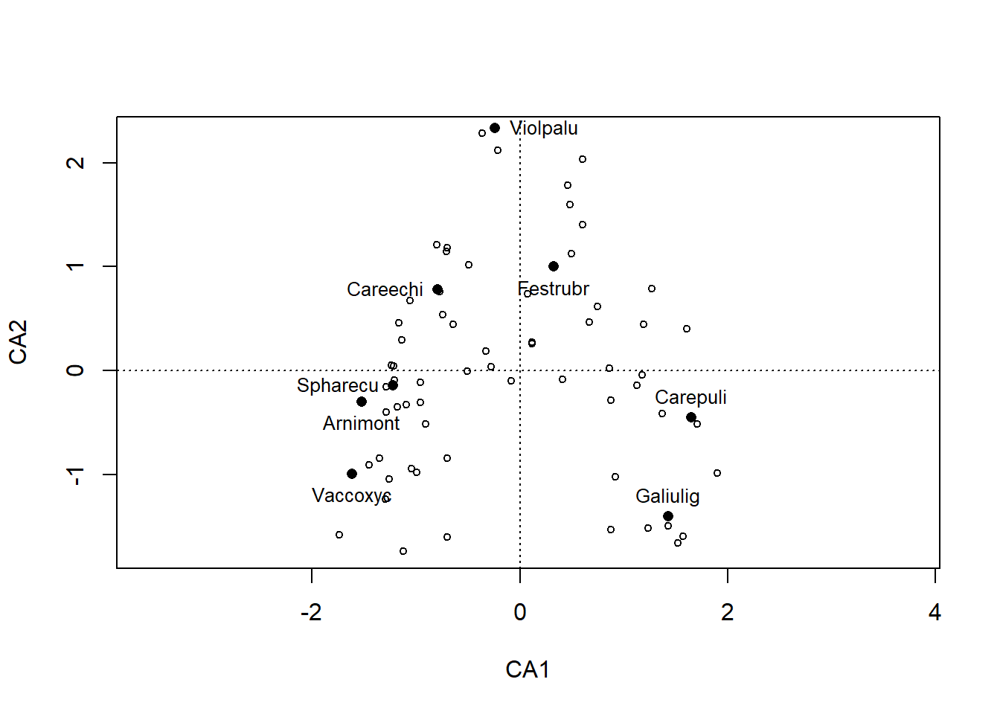
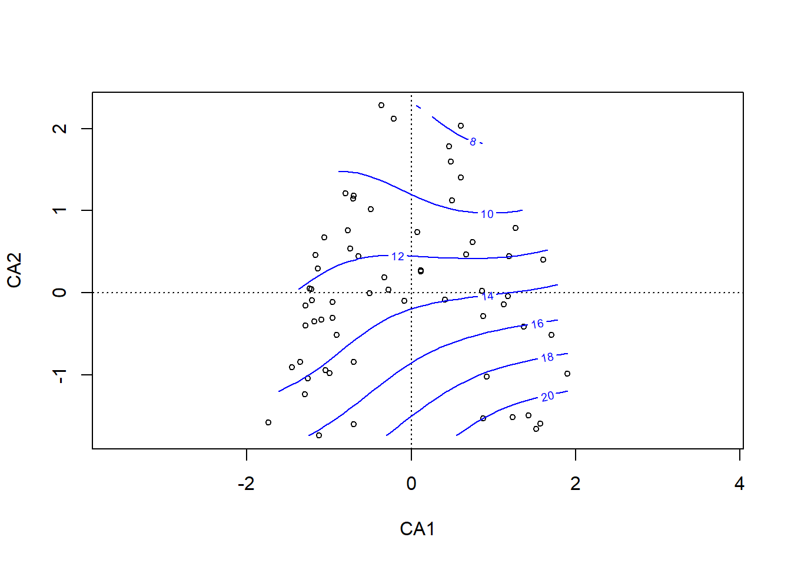
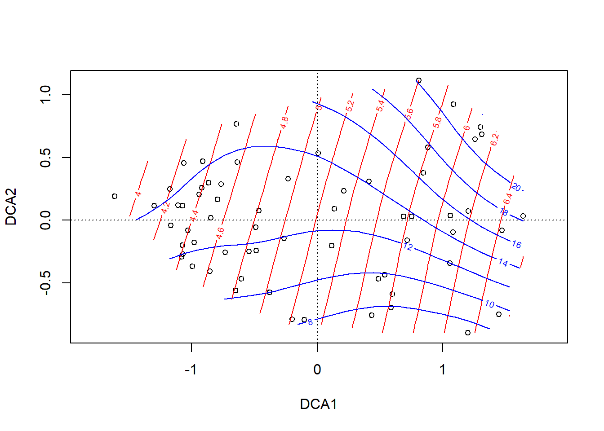
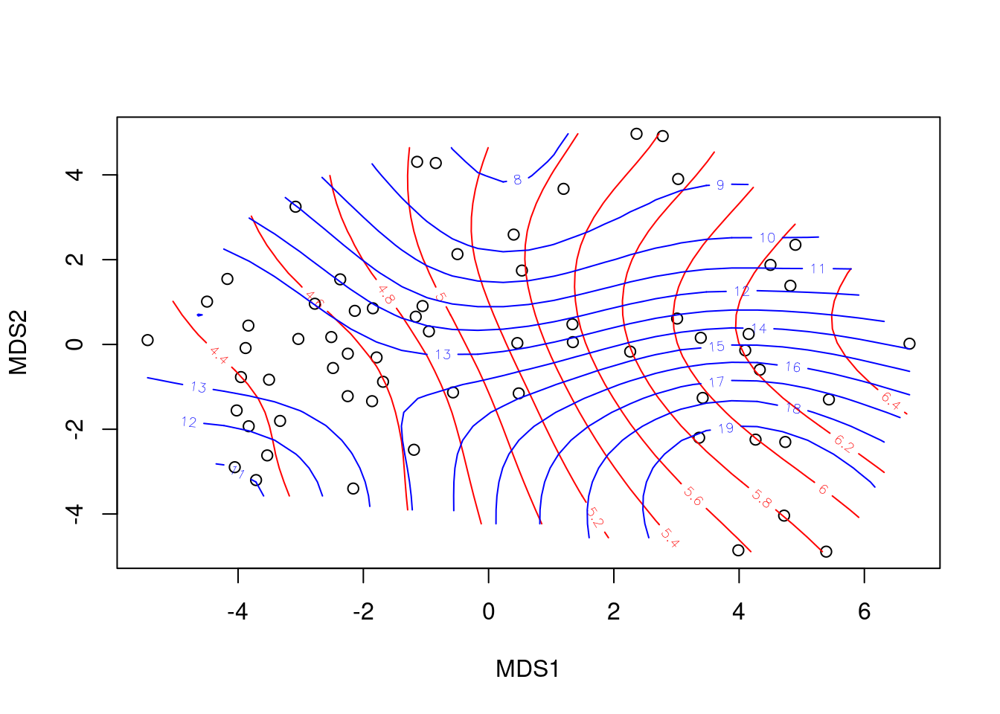
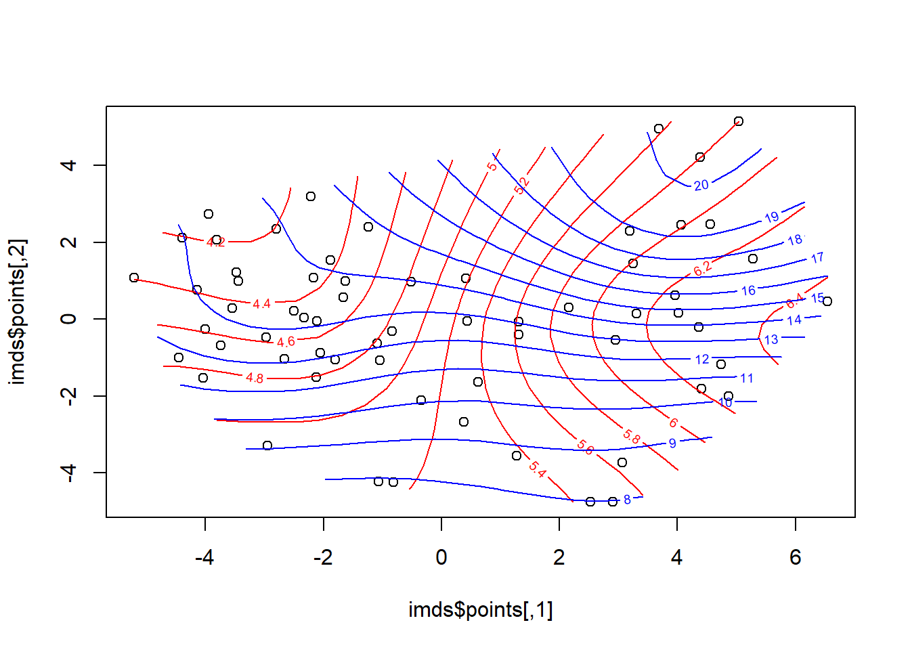

Stat7: Demo
Ordinationen II
- Demoscript als Download
- Datensatz Doubs.RData
- Funktion triplot.rda.R
Interpretation von Ordinationen
Wildi pp. 96 et seq.
## Plot Arten
if(!require(dave)){install.packages("dave")}Loading required package: daveLoading required package: clusterLoading required package: labdsvLoading required package: mgcvLoading required package: nlmeThis is mgcv 1.8-40. For overview type 'help("mgcv-package")'.This is labdsv 2.0-1
convert existing ordinations with as.dsvord()
Attaching package: 'labdsv'The following object is masked from 'package:stats':
densityLoading required package: veganLoading required package: permuteLoading required package: latticeThis is vegan 2.6-2Loading required package: nnet
Attaching package: 'nnet'The following object is masked from 'package:mgcv':
multinomLoading required package: treelibrary(dave)
ca <- cca(sveg^0.5)
## Plot mit ausgewählten Arten
sel.spec <- c(3, 11, 23, 31, 39, 46, 72, 77, 96)
snames <- names(sveg[,sel.spec])
snames[1] "Vaccinium.oxycoccos" "Carex.echinata" "Arnica.montana"
[4] "Festuca.rubra" "Carex.pulicaris" "Sphagnum.recurvum"
[7] "Viola.palustris" "Galium.uliginosum" "Stachys.officinalis"scores <- scores(ca, display = "species", scaling = "sites")
sx <- scores[sel.spec, 1]
sy <- scores[sel.spec, 2]
plot(ca, display = "sites", type = "point")
points(sx, sy, pch = 16)
snames <- make.cepnames(snames)
text(sx, sy, snames, pos = c(1,2,1,1,3,2,4,3,1), cex = 0.8)
## Plot "response surfaces" in der CA
plot(ca, display = "sites", type = "point")
ordisurf(ca, ssit$pH.peat, add = T)
Family: gaussian
Link function: identity
Formula:
y ~ s(x1, x2, k = 10, bs = "tp", fx = FALSE)
Estimated degrees of freedom:
4.63 total = 5.63
REML score: 28.14791 plot(ca, display = "sites", type = "points")
ordisurf(ca, ssit$Waterlev.av, add = T, col = "blue")
Family: gaussian
Link function: identity
Formula:
y ~ s(x1, x2, k = 10, bs = "tp", fx = FALSE)
Estimated degrees of freedom:
5.07 total = 6.07
REML score: 161.492 ## Das gleiche für die DCA
dca <- decorana(sveg)
plot(dca, display = "sites", type = "points")
ordisurf(dca, ssit$pH.peat, add = T)
Family: gaussian
Link function: identity
Formula:
y ~ s(x1, x2, k = 10, bs = "tp", fx = FALSE)
Estimated degrees of freedom:
2.61 total = 3.61
REML score: 29.47878 ordisurf(dca, ssit$Waterlev.av, add = T, col = "blue")
Family: gaussian
Link function: identity
Formula:
y ~ s(x1, x2, k = 10, bs = "tp", fx = FALSE)
Estimated degrees of freedom:
6.23 total = 7.23
REML score: 161.1293 ## Das gleiche mit NMDS
mde <- vegdist(sveg, method = "euclidean")
mmds <- metaMDS(mde)Run 0 stress 0.1478603
Run 1 stress 0.1972602
Run 2 stress 0.1472019
... New best solution
... Procrustes: rmse 0.0115021 max resid 0.06899205
Run 3 stress 0.1757188
Run 4 stress 0.1489369
Run 5 stress 0.2063934
Run 6 stress 0.1478582
Run 7 stress 0.1514736
Run 8 stress 0.1992033
Run 9 stress 0.1471444
... New best solution
... Procrustes: rmse 0.003999956 max resid 0.02131571
Run 10 stress 0.1489369
Run 11 stress 0.1471305
... New best solution
... Procrustes: rmse 0.00215906 max resid 0.0131935
Run 12 stress 0.1471847
... Procrustes: rmse 0.004001129 max resid 0.02135821
Run 13 stress 0.1478603
Run 14 stress 0.1462813
... New best solution
... Procrustes: rmse 0.03020837 max resid 0.1480365
Run 15 stress 0.1472019
Run 16 stress 0.1954235
Run 17 stress 0.177165
Run 18 stress 0.1950714
Run 19 stress 0.1462959
... Procrustes: rmse 0.002066783 max resid 0.01268207
Run 20 stress 0.1646404
*** No convergence -- monoMDS stopping criteria:
2: no. of iterations >= maxit
12: stress ratio > sratmax
6: scale factor of the gradient < sfgrminif(!require(MASS)){install.packages("MASS")}Loading required package: MASSlibrary(MASS)
imds <- isoMDS(mde)initial value 21.981028
iter 5 value 15.595142
iter 10 value 15.269201
final value 15.229997
convergedplot(mmds$points)
ordisurf(mmds, ssit$pH.peat, add = T)
Family: gaussian
Link function: identity
Formula:
y ~ s(x1, x2, k = 10, bs = "tp", fx = FALSE)
Estimated degrees of freedom:
5.99 total = 6.99
REML score: 41.84457 ordisurf(mmds, ssit$Waterlev.av,add = T, col = "blue")
Family: gaussian
Link function: identity
Formula:
y ~ s(x1, x2, k = 10, bs = "tp", fx = FALSE)
Estimated degrees of freedom:
6.32 total = 7.32
REML score: 168.9823 plot(imds$points)
ordisurf(imds, ssit$pH.peat, add = T)
Family: gaussian
Link function: identity
Formula:
y ~ s(x1, x2, k = 10, bs = "tp", fx = FALSE)
Estimated degrees of freedom:
7.06 total = 8.06
REML score: 37.68641 ordisurf(imds, ssit$Waterlev.av, add = T, col = "blue")
Family: gaussian
Link function: identity
Formula:
y ~ s(x1, x2, k = 10, bs = "tp", fx = FALSE)
Estimated degrees of freedom:
6.01 total = 7.01
REML score: 167.6801 Constrained ordination
## 5 Umweltvariablen gewählt, durch die die Ordination constrained werden soll
ssit
summary(ssit)
s5 <- c("pH.peat", "P.peat", "Waterlev.av", "CEC.peat", "Acidity.peat")
ssit5 <- ssit[s5]
data(sveg)
summary(sveg)## RDA = constrained PCA
rda <- rda(sveg~., ssit5)
plot(rda)
## CCA = constrained CA
cca <- cca(sveg~., ssit5)
plot(cca)
## Unconstrained and constrained variance
tot <- cca$tot.chi
constr <- cca$CCA$tot.chi
constr / totRedundancy analysis (RDA)
Mehr Details zu RDA aus Borcard et al. (Numerical ecology with R)
## Datensatz Doubs
## Doubs Datensatz in den workspace laden
load(here("data","Doubs.RData")) summary(spe)
summary(env)
summary(spa)## Entfernen der Untersuchungsfläche ohne Arten
spe <- spe[-8, ]
env <- env[-8, ]
spa <- spa[-8, ]
## Karten für 4 Fischarten
par(mfrow = c(2, 2))
plot(spa, asp = 1, col = "brown", cex = spe$Satr, xlab = "x (km)", ylab = "y (km)", main = "Brown trout")
lines(spa, col = "light blue")
plot(spa, asp = 1, col = "brown", cex = spe$Thth, xlab = "x (km)", ylab = "y (km)", main = "Grayling")
lines(spa, col = "light blue")
plot(spa, asp = 1, col = "brown", cex = spe$Alal, xlab = "x (km)", ylab = "y (km)", main = "Bleak")
lines(spa, col = "light blue")
plot(spa, asp = 1, col = "brown", cex = spe$Titi, xlab = "x (km)", ylab = "y (km)", main = "Tench")
lines(spa, col = "light blue")
## Set aside the variable 'dfs' (distance from the source) for
## later use
dfs <- env[, 1]
## Remove the 'dfs' variable from the env data frame
env2 <- env[, -1]
## Recode the slope variable (slo) into a factor (qualitative)
## variable to show how these are handled in the ordinations
slo2 <- rep(".very_steep", nrow(env))
slo2[env$slo <= quantile(env$slo)[4]] <- ".steep"
slo2[env$slo <= quantile(env$slo)[3]] <- ".moderate"
slo2[env$slo <= quantile(env$slo)[2]] <- ".low"
slo2 <- factor(slo2, levels = c(".low", ".moderate", ".steep", ".very_steep"))
table(slo2)slo2
.low .moderate .steep .very_steep
8 8 6 7 ## Create an env3 data frame with slope as a qualitative variable
env3 <- env2
env3$slo <- slo2
## Create two subsets of explanatory variables
## Physiography (upstream-downstream gradient)
envtopo <- env2[, c(1 : 3)]
names(envtopo)[1] "ele" "slo" "dis"## Water quality
envchem <- env2[, c(4 : 10)]
names(envchem)[1] "pH" "har" "pho" "nit" "amm" "oxy" "bod"## Hellinger-transform the species dataset
library(vegan)
spe.hel <- decostand(spe, "hellinger")spe.hel## Redundancy analysis (RDA)
### RDA of the Hellinger-transformed fish species data, constrained
### by all the environmental variables contained in env3
spe.rda <- rda(spe.hel ~ ., env3) # Observe the shortcut formulaspe.rda
summary(spe.rda) # Scaling 2 (default)## Canonical coefficients from the rda object
coef(spe.rda)## Unadjusted R^2 und Adjusted R^2
(R2 <- RsquareAdj(spe.rda))
### Triplots of the rda results (lc scores)
### Site scores as linear combinations of the environmental variables
## dev.new(title = "RDA scaling 1 and 2 + lc", width = 12, height = 6, noRStudioGD = TRUE)
par(mfrow = c(1, 2))
## Scaling 1
plot(spe.rda,scaling = 1, display = c("sp", "lc", "cn"), main = "Triplot RDA spe.hel ~ env3 - scaling 1 - lc scores")
spe.sc1 <- scores(spe.rda, choices = 1:2, scaling = 1, display = "sp")
arrows(0, 0, spe.sc1[, 1] * 0.92, spe.sc1[, 2] * 0.92, length = 0, lty = 1, col = "red")
text(-0.75, 0.7, "a", cex = 1.5)
## Scaling 2
plot(spe.rda, display = c("sp", "lc", "cn"), main = "Triplot RDA spe.hel ~ env3 - scaling 2 - lc scores")
spe.sc2 <- scores(spe.rda, choices = 1:2, display = "sp")
arrows(0, 0, spe.sc2[, 1] * 0.92, spe.sc2[, 2] * 0.92,length = 0, lty = 1, col = "red")
text(-0.82, 0.55, "b", cex = 1.5)
### Triplots of the rda results (wa scores)
### Site scores as weighted averages (vegan's default)
## Scaling 1 : distance triplot
##dev.new(title = "RDA plot", width = 12, height = 6, noRStudioGD = TRUE)
par(mfrow = c(1, 2))
plot(spe.rda, scaling = 1, main = "Triplot RDA spe.hel ~ env3 - scaling 1 - wa scores")
arrows(0, 0, spe.sc1[, 1] * 0.92, spe.sc1[, 2] * 0.92, length = 0, lty = 1, col = "red")
## Scaling 2 (default) : correlation triplot
plot(spe.rda, main = "Triplot RDA spe.hel ~ env3 - scaling 2 - wa scores")
arrows(0, 0, spe.sc2[, 1] * 0.92, spe.sc2[, 2] * 0.92, length = 0, lty = 1, col = "red")
## Select species with goodness-of-fit at least 0.6 in the
## ordination plane formed by axes 1 and 2
spe.good <- goodness(spe.rda)
sel.sp <- which(spe.good[, 2] >= 0.6)
sel.sp
## Triplots with homemade function triplot.rda(), scalings 1 and 2
source("triplot.rda.R")
##dev.new(title = "RDA plot with triplot.rda", width = 12, height = 6, noRStudioGD = TRUE)
par(mfrow = c(1, 2))
triplot.rda(spe.rda, site.sc = "lc", scaling = 1, cex.char2 = 0.7, pos.env = 3,
pos.centr = 1, mult.arrow = 1.1, mar.percent = 0.05, select.spe = sel.sp)
text(-0.92, 0.72, "a", cex = 2)
triplot.rda(spe.rda, site.sc = "lc", scaling = 2, cex.char2 = 0.7, pos.env = 3,
pos.centr = 1, mult.arrow = 1.1, mar.percent = 0.05, select.spe = sel.sp)
text(-2.82, 2, "b", cex = 2)
## Global test of the RDA result
anova(spe.rda, permutations = how(nperm = 999))
## Tests of all canonical axes
anova(spe.rda, by = "axis", permutations = how(nperm = 999))
### Partial RDA: effect of water chemistry, holding physiography
### constant
## Simple syntax; X and W may be in separate tables of quantitative
## variables
(spechem.physio <- rda(spe.hel, envchem, envtopo))summary(spechem.physio)## Formula interface; X and W variables must be in the same
## data frame
(spechem.physio2 <- rda(spe.hel ~ pH + har + pho + nit + amm + oxy + bod
+ Condition(ele + slo + dis), data = env2))
## Test of the partial RDA, using the results with the formula
## interface to allow the tests of the axes to be run
anova(spechem.physio2, permutations = how(nperm = 999))
anova(spechem.physio2, permutations = how(nperm = 999), by = "axis")
## Partial RDA triplots (with fitted site scores)
## with function triplot.rda
## Scaling 1
##dev.new(title = "Partial RDA",width = 12, height = 6, noRStudioGD = TRUE)
par(mfrow = c(1, 2))
triplot.rda(spechem.physio, site.sc = "lc", scaling = 1,
cex.char2 = 0.8, pos.env = 3, mar.percent = 0)
text(-0.58, 0.64, "a", cex = 2)
## Scaling 2
triplot.rda(spechem.physio, site.sc = "lc", scaling = 2, cex.char2 = 0.8,
pos.env = 3, mult.spe = 1.1, mar.percent = 0.04)
text(-3.34, 3.64, "b", cex = 2)Variation partioning
### Variation partitioning with two sets of explanatory variables
## Explanation of fraction labels (two, three and four explanatory
## matrices) with optional colours
par(mfrow = c(1, 3), mar = c(1, 1, 1, 1))
showvarparts(2, bg = c("red", "blue"))
showvarparts(3, bg = c("red", "blue", "yellow"))
showvarparts(4, bg = c("red", "blue", "yellow", "green"))
### 1. Variation partitioning with all explanatory variables
### (except dfs)
(spe.part.all <- varpart(spe.hel, envchem, envtopo))
## Plot of the partitioning results
par(mfrow = c(1, 1))
plot(spe.part.all, digits = 2, bg = c("red", "blue"),
Xnames = c("Chemistry", "Physiography"),
id.size = 0.7)